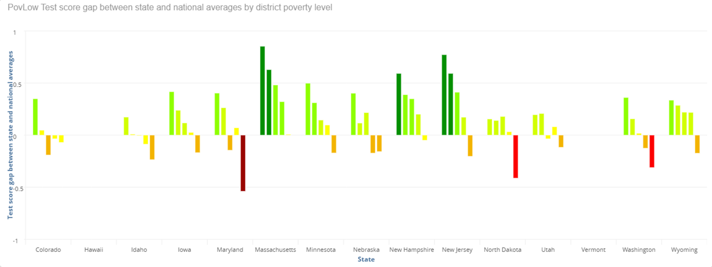
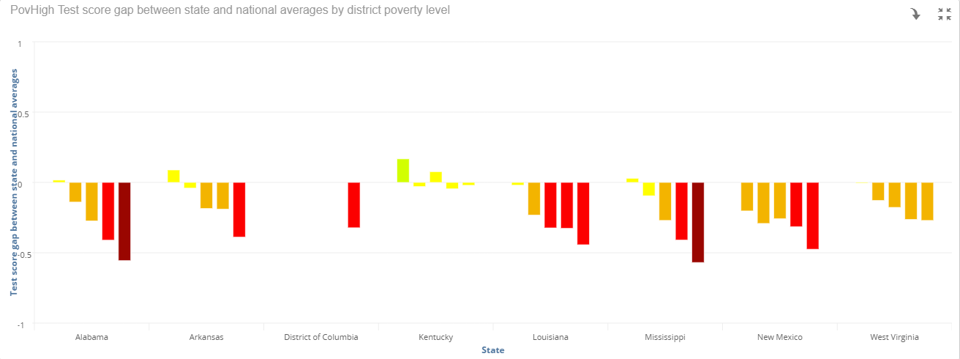

Overview
This project examined the relationship between poverty and education across various U.S. regions by integrating multiple socioeconomic datasets. Using Infor Birst, a business intelligence and analytics platform, we transformed raw data into an interactive dashboard that enabled users to explore how poverty and district/state spending impacts test scores and related indicators over time.
Images & Screenshots
This graph depicts the lower poverty states, along with the test score gap at the various poverty levels. You can see that these lower poverty states average higher SAT scores than the national average.
This graph depicts some of the higher poverty states, along with the test score gap at the various poverty levels. You can see that these higher poverty states average lower SAT scores than the national average.
Key Features
- Correlation analysis between poverty rates and education completion
- Time series visualizations highlighting multi-year trends
- Detailed analytics and education metrics
- Conditional logic (color coded results) for visualizing the trends
Technologies Used
- Infor Birst (cloud-based BI and analytics platform)
- Data transformation and ETL processes
- Infor Birst (cloud-based BI and analytics platform)
What I Did
- Collected and integrated multiple open datasets related to poverty, spending, and educational attainment
- Data transformation and ETL processes
- Configured detailed dashboard, with KPIs, and visual storytelling elements to explore disparities between communities
- Provided insights into how poverty is directly correlated to test scores
Challenges & Lessons
One challenge was aligning datasets from different sources with varying schemas and time ranges. I had to ensure data consistency and resolve mismatches in geographic granularity (e.g., county vs. state-level). Another lesson was in using Birst’s semantic layer and visual tools to empower non-technical users to explore complex relationships in the data. This project improved my understanding of data modeling and BI storytelling.